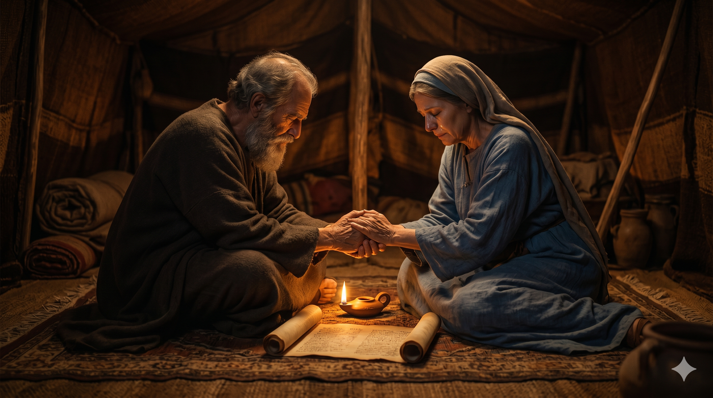

저물녘 브엘세바의 장막 어귀, 깊은 한숨을 쉬며 멀리 헷 족속의 마을을 바라보는 늙은 이삭과 리브가. 멀리 들녘에서 활을 메고 두 이방 여인을 데리고 돌아오는 에서의 그림자 — 자녀의 선택이 부모의 마음 속에 남긴 깊은 슬픔.
에서가 사십 세에 헷 족속 브에리의 딸 유딧과 헷 족속 엘론의 딸 바스맛을 아내로 맞이하였더니 그들이 이삭과 리브가의 마음에 근심이 되었더라 … 리브가가 이삭에게 이르되 내가 헷 사람의 딸들로 말미암아 내 삶이 싫어졌거늘 야곱이 만일 이 땅의 딸들 곧 그들과 같은 헷 사람의 딸들 중에서 아내를 맞이하면 내 삶이 내게 무슨 재미가 있으리이까 — 창세기 26:34–35; 27:46
이삭의 인생에는 큰 사건도 많지만, 성경은 두 줄만으로 한 부모의 깊은 상처를 기록합니다 — "그들이 이삭과 리브가의 마음에 근심이 되었더라." 에서가 마흔 살, 곧 아브라함이 리브가를 구해 보내던 그 나이에, 그는 부모와 의논하지 않고 가나안 헷 족속의 두 딸을 한꺼번에 아내로 들였습니다. 가나안 여인과 결혼하지 말라는 할아버지 아브라함의 마지막 신앙적 부탁이 한 세대 만에 짓밟힌 셈입니다. 이삭은 평생 평화로운 사람이었습니다. 우물을 양보하고, 들에서 묵상하던 사람이었습니다. 그런 그의 마음에 처음으로 "근심"이라는 단어가 깊이 박힙니다. 부모의 신앙과 자식의 선택이 어긋날 때, 그 자리에는 큰 다툼보다 더 무거운 침묵의 슬픔이 내려앉습니다.
리브가는 한 걸음 더 깊이 내려가 이렇게 외칩니다 — "내 삶이 싫어졌다." 인생의 황혼에 이른 어머니의 입에서 "내가 사는 것이 무엇이 유익하리이까" 라는 탄식이 나오게 한 것은, 가난도 병도 적도 아니라 자식의 결혼이었습니다. 자녀의 선택은 그가 누구를 사랑하는가뿐 아니라 그의 신앙이 어디로 향하는가를 드러냅니다. 그리고 그 선택이 부모가 세대를 넘어 지켜오던 언약의 길에서 벗어날 때, 그 슬픔은 그 어떤 외부의 고난보다도 깊이 부모의 영혼을 베어 갑니다. 이 한 장면이 다음 장 — 야곱이 축복을 빼앗는 비극으로 흘러가는 가정의 어두운 배경이 됩니다. 한 자녀의 그릇된 결정 하나가 가정 전체의 영적 풍경을 바꿉니다.

밤이 깊은 장막 안, 등잔 하나에 의지해 마주 앉아 손을 잡고 침묵 속에 기도하는 이삭과 리브가. 두 사람의 눈가에 어린 눈물과, 그 사이에 놓인 펴진 두루마리 — 한 가정의 신앙을 다음 세대로 이어가야 할 무거운 결단.
자녀가 다 자란 뒤에야 부모는 깨닫습니다 — 정말 가르쳐야 했던 것은 성적표가 아니라 "누구와 함께 살아가는가" 였다는 사실을 말입니다. 어릴 때 함께 무릎을 꿇어 보지 않은 자녀는, 어느 날 부모와 전혀 다른 방향을 향해 걸어갑니다. 늦었다고 절망하지 마십시오. 그러나 늦지 않았다면, 오늘 자녀와 한 끼 식사 자리에서 한 번 더 신앙의 이야기를 꺼내십시오. 신앙의 결혼관, 사람을 보는 눈, 인생을 정직하게 사는 자세 — 이것이 가장 깊은 유산입니다. 자녀의 선택을 강요할 수는 없지만, 그가 선택하기 전에 부모로서 기도하고 본을 보일 수는 있습니다.
반대로 이미 자녀의 선택으로 마음이 베인 부모님들에게 이 본문은 또 다른 위로가 됩니다 — 이삭과 리브가의 슬픔까지도 성경은 가리지 않고 기록합니다. 신앙의 가정이라고 해서 자녀가 다 부모 마음대로 자라는 것이 아닙니다. 슬픔을 부끄러워 마십시오. 다만 그 슬픔을 다른 자녀, 손주, 다음 세대를 위한 더 깊은 기도로 옮기십시오. 리브가의 슬픔이 결국 야곱을 메소포타미아로 떠나보내는 결단으로 이어졌듯이, 부모의 눈물은 다음 세대의 길을 여는 거룩한 거름이 됩니다.
자녀의 선택이 부모의 마음을 벨 때, 그 상처를 다음 세대를 위한 기도로 바꾸십시오.
이삭의 침묵의 슬픔이 야곱의 새로운 출발점이 되었습니다.
당신의 눈물이 다음 세대의 언약의 길을 엽니다.